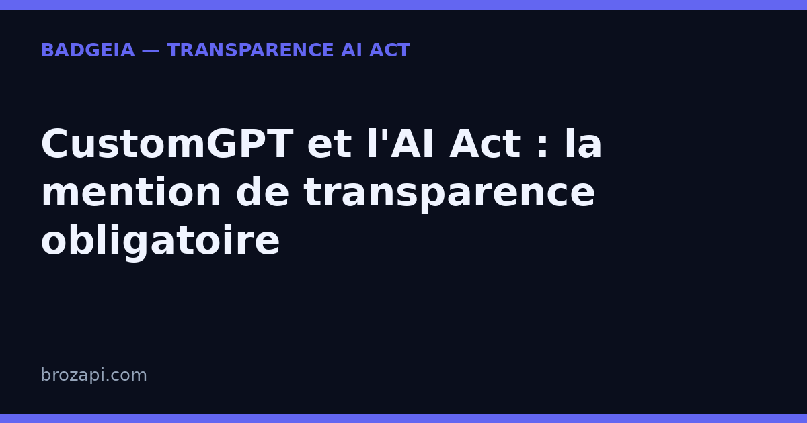

CustomGPT et l'AI Act : la mention de transparence obligatoire

Publié le 30 août 2026 · Lecture : 8 minutes · Par l'équipe Brozapi
CustomGPT.ai est une plateforme no-code qui vous permet de construire un chatbot entraîné sur vos propres contenus : vos pages web, vos PDF, votre documentation, votre base de connaissances. C'est cette promesse — un bot qui répond juste, en citant ses sources, sans inventer — qui séduit de plus en plus d'équipes support, de sites e-commerce et de PME. Mais il y a un piège à éviter : une précision technique ne change rien à une obligation légale. Depuis le 2 août 2026, l'article 50 de l'AI Act impose d'informer clairement vos visiteurs qu'ils échangent avec une intelligence artificielle — quel que soit le moteur qui fait tourner votre bot, et même s'il est « anti-hallucination ».
Voici ce que cela change concrètement quand on utilise CustomGPT, et comment vous mettre en règle sans dénaturer un outil qui, lui, fonctionne très bien.
Pourquoi CustomGPT déclenche l'article 50
L'article 50 du règlement européen sur l'intelligence artificielle (AI Act, règlement 2024/1689) impose une règle simple : toute personne qui interagit avec un système d'IA doit en être informée, de manière claire et distincte, dès le début de l'échange. La logique est la même que pour un chatbot de support classique : si le visiteur peut croire qu'il parle à un humain de votre équipe alors que c'est un algorithme qui répond, l'obligation s'applique.
Et CustomGPT tombe pleinement sous cette règle. C'est même un cas d'école : le bot est conçu pour être fluide, naturel, et ancré dans votre ton et vos contenus. Il est justement si bien intégré à votre site que le visiteur peut ne pas se douter qu'il s'adresse à une machine. Plus votre bot est bon, plus la mention de transparence devient nécessaire — c'est le paradoxe qu'il faut avoir en tête.
Le point clé pour vous : vous restez responsable de ce qui s'affiche sur votre site, même si c'est CustomGPT.ai qui fournit la technologie et héberge le modèle. L'éditeur fournit l'outil, mais c'est vous qui décidez de ce que vos visiteurs voient.
Ce qui rend CustomGPT particulier (et ce que ça ne change pas)
Pour bien poser la mention, il faut comprendre ce qui distingue CustomGPT des autres chatbots — et pourquoi, sur le plan légal, cela ne vous dispense de rien.
Le bot est entraîné sur vos données. Contrairement à un ChatGPT générique qui répond de mémoire, un agent CustomGPT puise ses réponses dans les documents que vous avez chargés : votre site (par sitemap), vos PDF, Word, Excel, vos bases Notion, vos articles d'aide. C'est ce qu'on appelle le RAG (Retrieval-Augmented Generation) : le modèle récupère l'information dans votre base avant de répondre.
Il affiche ses sources. Chaque réponse peut être accompagnée de la référence du document d'où elle provient. C'est une force pour la confiance : le visiteur voit que le bot ne brode pas.
Il est « anti-hallucination ». La plateforme restreint les réponses au contenu que vous avez fourni, ce qui réduit fortement les réponses inventées.
Tout cela est excellent pour la qualité de vos réponses. Mais attention : aucune de ces caractéristiques ne remplace la mention de transparence. L'obligation de l'article 50 porte sur l'interaction — le fait qu'une personne dialogue avec une IA — et non sur la fiabilité des réponses. Un bot qui cite ses sources doit être signalé exactement comme un bot qui ne le fait pas. La citation de source est un gage de sérieux ; elle n'informe pas à elle seule le visiteur qu'il parle à une machine, dans sa langue, dès le premier échange.
Ce que vous devez afficher
Concrètement, pour un chatbot CustomGPT intégré à votre site, voici les éléments à mettre en place :
- Une mention visible dès l'ouverture du chat. Le premier message que voit le visiteur doit annoncer la nature de l'interlocuteur. Exemples prêts à coller : « Bonjour, je suis l'assistant virtuel de [votre entreprise]. Je m'appuie sur l'intelligence artificielle pour répondre. Un membre de l'équipe peut prendre le relais à tout moment. » ou « Je suis un assistant basé sur l'IA, entraîné sur les documents de [votre entreprise]. Un humain peut reprendre la conversation si vous préférez. »
- Un rappel persistant dans la fenêtre de chat. Une ligne discrète — « Assistant IA · un conseiller peut vous répondre » — maintient l'information visible pendant toute la conversation, y compris sur mobile.
- Une porte de sortie vers un humain. L'article 50 ne l'exige pas formellement, mais l'annoncer rassure et renforce votre transparence. CustomGPT permet de configurer l'escalade vers un humain quand le bot manque d'information.
- Une trace de votre configuration. Noter la date de mise en place, le texte affiché et les pages concernées est une bonne pratique recommandée. Attention : ce « dossier de preuve » n'est pas une obligation légale en soi — c'est une précaution utile en cas de contrôle, pas une exigence du texte.
Comment configurer la transparence dans CustomGPT
Bonne nouvelle : tout se règle dans l'interface, sans toucher au code (c'est l'ADN no-code de la plateforme). Voici les réglages à vérifier, du plus simple au plus avancé.
1. Le message d'accueil (greeting). C'est l'emplacement le plus important. Personnalisez le message de bienvenue du bot pour qu'il s'annonce comme assistant IA dès la première bulle. C'est la première chose que lit le visiteur, et la plus simple à vérifier pour un contrôleur comme pour un client.
2. La personnalité et le ton. Dans les réglages de l'agent, vous définissez le comportement du bot. Profitez-en pour inscrire dans les consignes une règle du type : « Tu es un assistant IA. Si l'on te demande, indique que tu es une intelligence artificielle et qu'un humain peut prendre le relais. » Cela garantit que le bot reste transparent même en cours de conversation, pas seulement au premier message.
3. L'intégration widget. Quand vous intégrez le bot sur votre site (embed ou plugin), vérifiez que la mention du message d'accueil est bien visible dès l'ouverture, et pas masquée par le design. Testez sur mobile : c'est là que la mention disparaît le plus souvent.
4. Le branding « Powered by CustomGPT ». Sur l'offre d'entrée de gamme, la plateforme affiche une mention « Powered by CustomGPT ». Ne comptez pas dessus pour remplir l'obligation : cette mention n'annonce pas clairement, dans la langue du visiteur, qu'il s'agit d'une IA. Ajoutez toujours votre propre message d'accueil explicite, indépendamment du branding.
5. L'escalade vers un humain. Configurez le passage à un humain quand le bot atteint sa limite (question hors base, demande explicite, détection d'insatisfaction). Annoncez cette possibilité dans le message d'accueil.
Une fois ces réglages faits, testez simplement : demandez à une personne extérieure au sujet de lire le chat et de dire, en quelques secondes, si elle comprend qu'elle parle à une IA. Si elle hésite, reformulez la mention.
Mini-FAQ : les questions que se posent les équipes
Mon bot cite ses sources, suis-je dispensé de la mention ?
Non. La citation de source est un gage de fiabilité, pas une déclaration de transparence. L'article 50 exige que le visiteur sache qu'il parle à une IA, dès le premier échange et dans sa langue. Un bot « anti-hallucination » doit être signalé exactement comme un bot classique.
La mention « Powered by CustomGPT » suffit-elle ?
Non. Cette mention indique l'éditeur de la technologie, pas la nature artificielle de l'interlocuteur. Elle ne dit pas clairement « vous parlez à une IA » et peut ne pas être dans la langue du visiteur. Ajoutez votre propre message d'accueil explicite.
Mon bot est entraîné uniquement sur mes documents internes, suis-je concerné ?
Oui, dès lors qu'il répond à des personnes extérieures. Le fait que le bot s'appuie sur votre base de connaissances ne change rien : c'est l'interaction entre le visiteur et le système d'IA qui déclenche l'obligation, pas la provenance des données.
La mention doit-elle être en français ?
Oui, dans la langue du visiteur. Sur un site francophone, la mention doit l'être aussi. Pour un site multilingue, adaptez le texte à chaque langue, en particulier dans le message d'accueil du chat.
Qui est responsable si la mention manque ?
C'est vous, en tant qu'exploitant du site, qui êtes responsable de la mise en conformité — pas CustomGPT.ai. L'éditeur fournit la plateforme, mais c'est vous qui choisissez ce qui est affiché à vos visiteurs. Conservez une trace de votre configuration et de sa date de mise à jour.
Que risque-t-on concrètement ?
Le non-respect de l'obligation de transparence expose à des amendes administratives prévues par l'article 99 du règlement, pouvant atteindre 15 millions d'euros ou 3 % du chiffre d'affaires mondial (le montant le plus élevé étant retenu). Pour les très petites entreprises, les montants sont appliqués avec proportionnalité — mais l'obligation, elle, ne connaît pas d'exception de taille. Au-delà du risque financier, c'est une question de confiance : un visiteur qui découvre seul qu'il parlait à une machine est un visiteur perdu.
Vérifiez votre site en 30 secondes
Notre scanner détecte automatiquement CustomGPT sur votre site et vérifie la présence d'une mention de transparence :
Si une mention manque, le kit BadgeIA (39 €) vous fournit un badge prêt à installer en deux lignes de code et une page registre datée, votre preuve de bonne foi en cas de contrôle.
Cet article est fourni à titre informatif et ne constitue pas un conseil juridique. Pour une analyse de votre situation, consultez un professionnel du droit.
Guides par plateforme : Intercom · Crisp · Tidio · Chatbase · Botpress